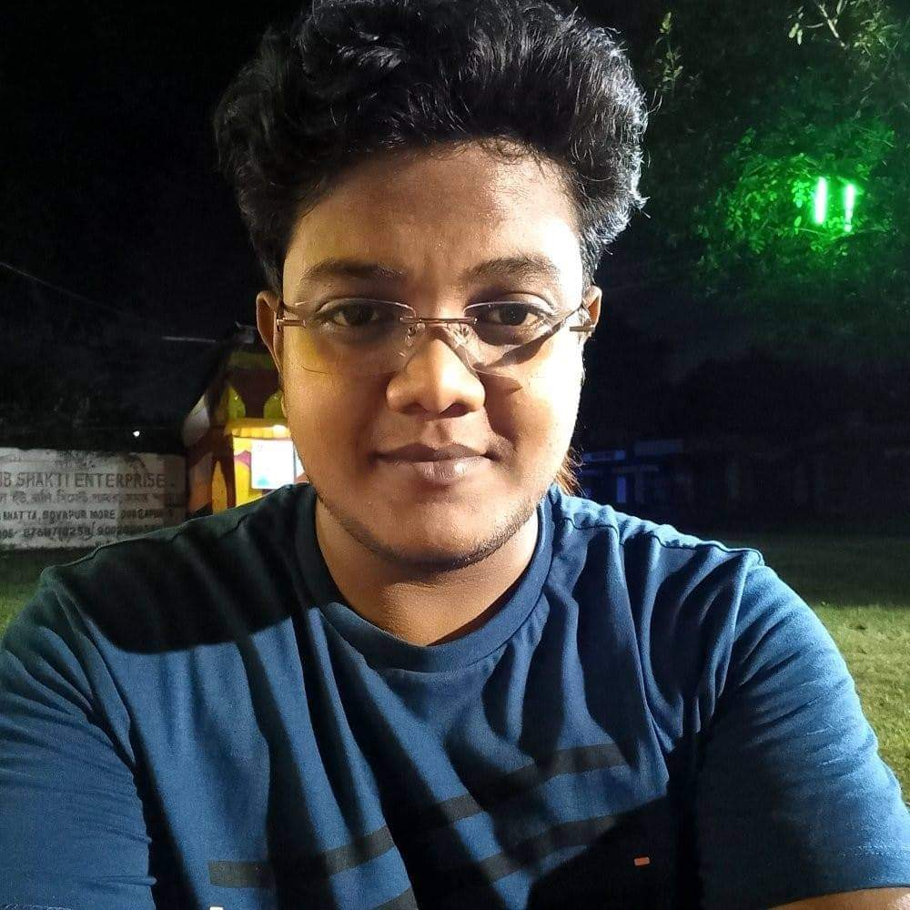

Subhradip Saha

Results-driven GIS professional with three years of hands-on experience in leveraging cutting-edge technologies such as ArcGIS, QGIS, Python, and remote sensing for spatial data analysis. Adapt at transforming complex geospatial data into actionable insights, I am passionate about contributing to innovative projects that require a strong foundation in GIS and data analytics. Eager to apply my skills in a dynamic environment where I can contribute to the effective utilization of geospatial technologies and further enhance my expertise in the field.
Education
-
Post Graduation - Kazi Nazrul University, Asansol
Specialization - M.Sc. in Geoinformatics
2017 - 2019
-
Graduation - Asutosh College, Calcutta University, Kolkata
Specialization - B.Sc. in Geology
2014 - 2017
-
AISSCE - Kendriya Vidyalaya, C.M.E.R.I., Durgapur
Stream - Science (PCMB)
2012 - 2014
-
AISSE - Guru Teg Bahadur Public School, Durgapur
Stream - General
2010 - 2012
Work Experience
-
Engineer(GIS) - RMSI Cropalytics Pvt. Ltd.
NOIDA, Uttar Pradesh
Oct, 2023 - Present
Responsibilities:
- Spatial Data Analysis
- Cadastral Data Mapping
- Geocoding
-
Junior Subject Matter Expert - GIS - Straive (SPi Technologies India Pvt. Ltd.)
Puducherry, Puducherry (Remote)
Apr, 2021 - Oct, 2023
Responsibilities:
- Georeferencing and Geotagging Geological Maps
- Data Analysis
- Quality Checking
- Quality Auditing
- Text Book Solution
-
GIS Analyst - Nice Infotech
Itanagar, Arunachal Pradesh
Feb, 2020 - Oct, 2020
Responsibilities:
- GIS Database Management
- Creating GIS data for Itanagar Smart City
- Team Handling
- Dealing with client for various Smart City Components
-
Technical Project Assistant - North Eastern Space Applications Centre
Umiam, Meghalaya
Apr, 2019 - Jan, 2020
Responsibilities:
- Morphometric Analysis
- ArcGIS Model Creation for various spatial analysis
- Publicity Club Member
Skills
Technical Skills
- Spatial analysis, cartography and research skills.
- Database management and organization.
- Scientific and mathematical computation.
- Knowledge of computer hardware engineering, installation and maintenance.
Non-Technical Skills
- Critical Thinking and Problem Solving Skills
- Time Management Skills
Awards, Certifications or Other Achievements
- Received Exceptional Effort Award for H2-2022 from Straive
- Recieved recognition for working as an active member for Itanagar State Covid Control Room from Vikram Singh Malik, IAS
- Completed Openlayers course from Udemy